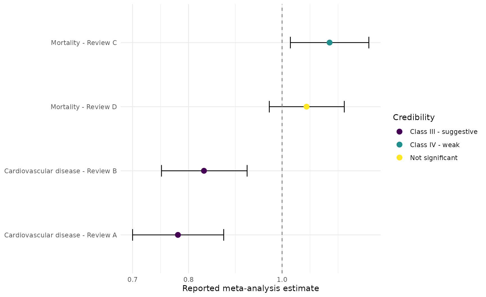
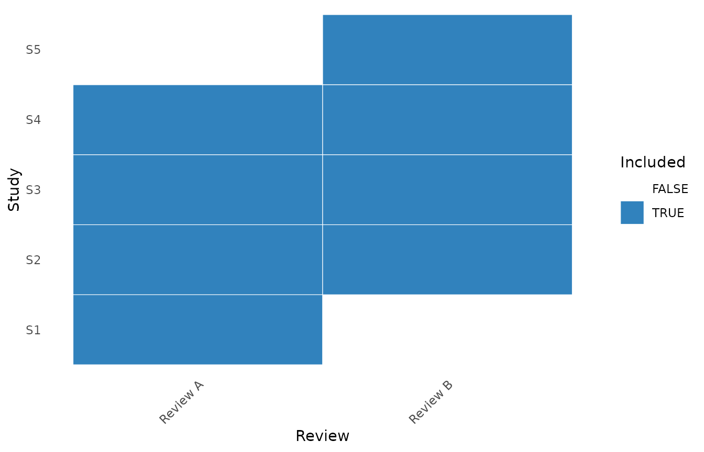
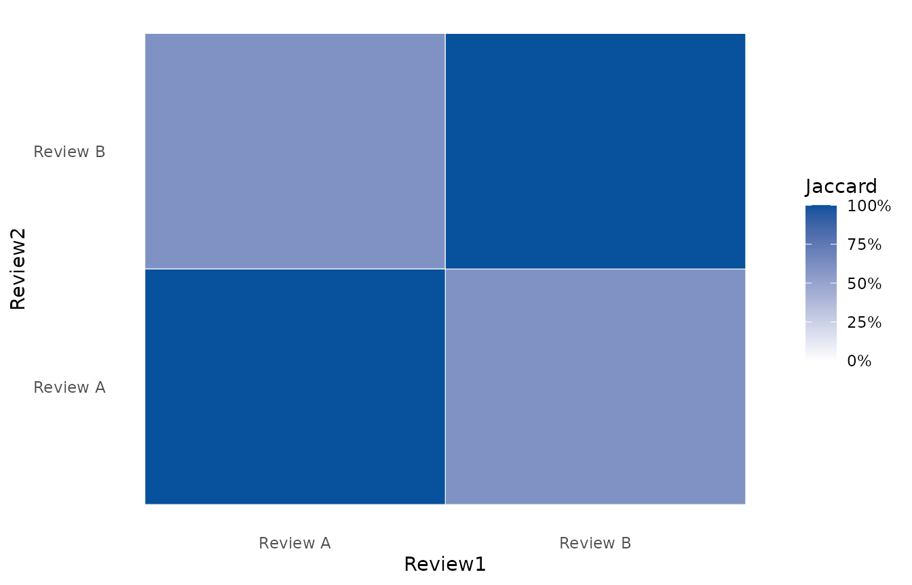
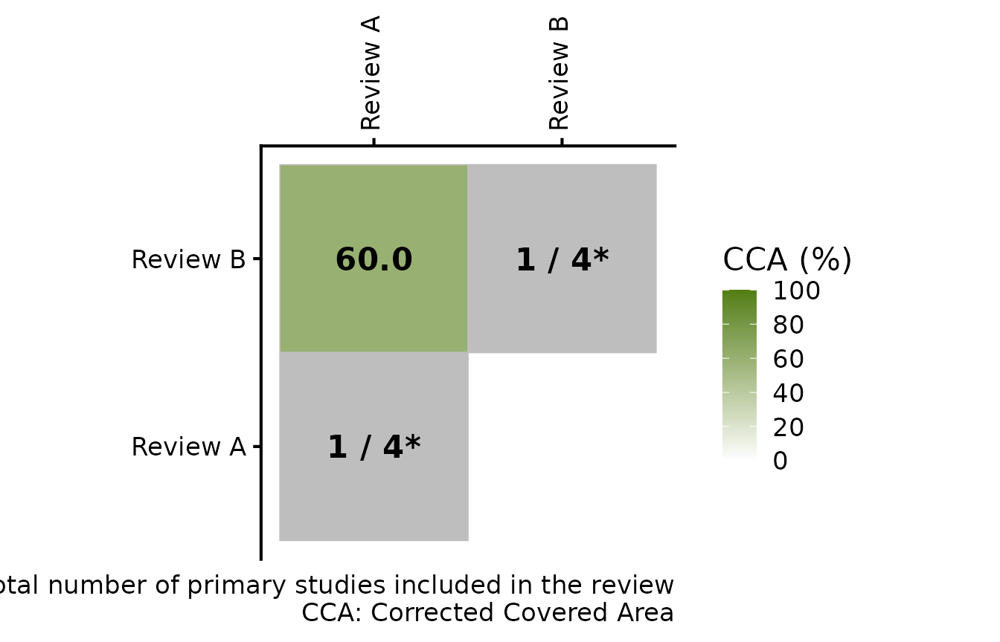
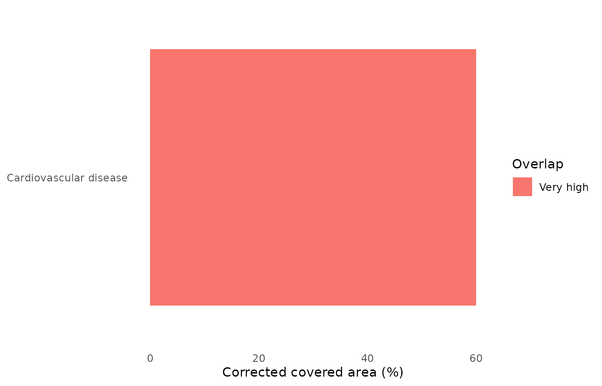

Umbrella reviews without pooling meta-analyses
Source:vignettes/umbrella-reviews.Rmd
umbrella-reviews.RmdThe umbrella-review functions preserve each published meta-analysis as a separate result. They do not combine reviews into a new pooled estimate.
library(metapropul)
reviews <- data.frame(
outcome = rep(c("Cardiovascular disease", "Mortality"), each = 2),
review = c("Review A", "Review B", "Review C", "Review D"),
estimate = c(0.78, 0.83, 1.12, 1.06),
lower = c(0.70, 0.75, 1.02, 0.97),
upper = c(0.87, 0.92, 1.23, 1.16),
studies = c(14, 11, 8, 12),
participants = c(3000, 2500, 1800, 2200),
i2 = c(20, 45, 55, 40),
p = c(1e-7, 2e-5, 0.01, 0.12),
pred_lower = c(0.71, 0.69, 0.98, 0.94),
pred_upper = c(0.88, 0.98, 1.28, 1.20),
year = c(2022, 2024, 2020, 2025),
quality = c("High", "Moderate", "Low", "High"),
risk = c("Low", "Some concerns", "High", "Low")
)
umbrella <- umbrella_review(
reviews, "outcome", "review", "estimate", "lower", "upper",
studies = "studies", participants = "participants", i2 = "i2",
p_value = "p", pred_lower = "pred_lower", pred_upper = "pred_upper",
year = "year", quality = "quality",
risk_of_bias = "risk"
)
umbrella
#>
#> Umbrella review
#> ---------------
#> Systematic reviews/meta-analyses: 4
#> Outcomes: 2
#> Outcomes represented by multiple reviews: 2
#> Effect scale: ratioCredibility, GRADE, and review quality
These are intentionally distinct assessments:
credibility <- classify_umbrella(umbrella)
grade <- grade_umbrella(
umbrella, starting_certainty = "high",
risk_of_bias = c("not_serious", "serious", "very_serious", "not_serious")
)
quality <- assess_review_quality(umbrella, tool = "AMSTAR2", overall = "quality")
credibility[, c("Outcome", "Review", "EvidenceClass")]
#> # A tibble: 4 × 3
#> Outcome Review EvidenceClass
#> <chr> <chr> <ord>
#> 1 Cardiovascular disease Review A Class III - suggestive
#> 2 Cardiovascular disease Review B Class III - suggestive
#> 3 Mortality Review C Class IV - weak
#> 4 Mortality Review D Not significant
grade[, c("Outcome", "Review", "GRADE")]
#> # A tibble: 4 × 3
#> Outcome Review GRADE
#> <chr> <chr> <ord>
#> 1 Cardiovascular disease Review A high
#> 2 Cardiovascular disease Review B moderate
#> 3 Mortality Review C low
#> 4 Mortality Review D high
quality
#> # A tibble: 4 × 4
#> Outcome Review Tool Overall
#> * <chr> <chr> <chr> <chr>
#> 1 Cardiovascular disease Review A AMSTAR2 High
#> 2 Cardiovascular disease Review B AMSTAR2 Moderate
#> 3 Mortality Review C AMSTAR2 Low
#> 4 Mortality Review D AMSTAR2 Highclassify_umbrella() applies quantitative credibility
rules. grade_umbrella() records reviewer-supplied GRADE
judgements; it does not infer GRADE domains from statistical results.
assess_review_quality() records AMSTAR 2 or ROBIS
results.
render_gt(table_umbrella(umbrella, credibility, grade))| Review | Reported estimate [95% CI] | Studies | Participants | I2 (%) | Conclusion | Credibility | GRADE |
|---|---|---|---|---|---|---|---|
| Cardiovascular disease | |||||||
| Mortality | |||||||
| Each row is a reported meta-analysis result; no review-level pooling was performed. | |||||||
plot_umbrella(umbrella, credibility)
The plot contains one interval per reported meta-analysis and deliberately has no pooled diamond.
Diagnostics from primary studies
When primary-study estimates have been extracted, diagnostics are calculated separately inside each source review. The example data below are deterministic teaching values rather than a reconstruction of a published review.
primary <- do.call(rbind, lapply(seq_len(nrow(reviews)), function(i) {
se <- seq(0.10, 0.16, length.out = 5)
centre <- log(reviews$estimate[i])
yi <- centre + c(-0.08, -0.03, 0, 0.04, 0.09)
data.frame(
outcome = reviews$outcome[i], review = reviews$review[i],
study = paste0(reviews$review[i], "-S", seq_along(se)),
effect = exp(yi), lower = exp(yi - 1.96 * se),
upper = exp(yi + 1.96 * se),
participants = seq(400, 1200, length.out = 5)
)
}))
primary_diagnostics <- diagnose_umbrella_primary(
primary, "outcome", "review", "study", "effect", "lower", "upper",
participants = "participants", min_egger = 3
)
primary_diagnostics$summary
#> # A tibble: 4 × 13
#> Outcome Review PrimaryStudies LargestStudy LargestEstimate LargestStudyP
#> <chr> <chr> <int> <chr> <dbl> <dbl>
#> 1 Cardiovascul… Revie… 5 Review A-S5 0.853 0.322
#> 2 Cardiovascul… Revie… 5 Review B-S5 0.908 0.547
#> 3 Mortality Revie… 5 Review C-S5 1.23 0.204
#> 4 Mortality Revie… 5 Review D-S5 1.16 0.354
#> # ℹ 7 more variables: SmallStudyZ <dbl>, SmallStudyP <dbl>,
#> # SmallStudyAvailable <lgl>, ObservedSignificant <int>,
#> # ExpectedSignificant <dbl>, ExcessSignificanceP <dbl>,
#> # ExcessSignificance <lgl>
classify_umbrella(umbrella, primary_diagnostics)[,
c("Outcome", "Review", "EvidenceClass")]
#> # A tibble: 4 × 3
#> Outcome Review EvidenceClass
#> <chr> <chr> <ord>
#> 1 Cardiovascular disease Review A Class III - suggestive
#> 2 Cardiovascular disease Review B Class III - suggestive
#> 3 Mortality Review C Class IV - weak
#> 4 Mortality Review D Not significantPrimary-study overlap
membership <- data.frame(
outcome = rep("Cardiovascular disease", 8),
review = rep(c("Review A", "Review B"), each = 4),
study = c("S1", "S2", "S3", "S4", "S2", "S3", "S4", "S5")
)
overlap <- study_overlap(membership, "review", "study", "outcome")
overlap$overall
#> # A tibble: 1 × 8
#> Outcome Occurrences UniqueStudies Reviews StructuralMissing CCA CCA.percent
#> <chr> <int> <int> <int> <int> <dbl> <dbl>
#> 1 Cardiov… 8 5 2 0 0.6 60
#> # ℹ 1 more variable: Interpretation <chr>
overlap$pairwise
#> # A tibble: 1 × 12
#> Outcome Review1 Review2 Shared Union Occurrences Reviews StructuralMissing
#> <chr> <chr> <chr> <int> <int> <int> <int> <int>
#> 1 Cardiovasc… Review… Review… 3 5 8 2 0
#> # ℹ 4 more variables: Jaccard <dbl>, CCA <dbl>, CCA.percent <dbl>,
#> # Overlap.minimum <dbl>plot_study_overlap() displays the citation matrix,
pairwise Jaccard overlap, or corrected covered area.
sensitivity_umbrella_overlap() compares which reported
review would be retained under prespecified selection strategies; it
does not pool the selected reviews.
plot_study_overlap(overlap, type = "citation_matrix")
plot_study_overlap(overlap, type = "jaccard")
plot_study_overlap(overlap, type = "cca")
The triangular CCA heatmap follows the convention used by
ccaR: pairwise CCA percentages appear below the diagonal,
while grey diagonal cells show the number of unique primary studies in
each review. For several outcomes, an overall summary bar plot is also
available.
plot_study_overlap(overlap, type = "cca_summary")
Review-selection sensitivity
Selection strategies choose one already reported result per outcome; they do not calculate a synthesis across reviews.
sensitivity_umbrella_overlap(
umbrella, overlap,
strategies = c(
"highest_quality", "lowest_risk_of_bias", "most_recent",
"most_comprehensive", "largest_participant_count", "lowest_overlap",
"user_selected"
),
user_selected = c(
"Cardiovascular disease" = "Review B",
"Mortality" = "Review D"
)
)[, c("Outcome", "Review", "Strategy", "Estimate")]
#> # A tibble: 14 × 4
#> Outcome Review Strategy Estimate
#> <chr> <chr> <chr> <dbl>
#> 1 Cardiovascular disease Review A highest_quality 0.78
#> 2 Mortality Review D highest_quality 1.06
#> 3 Cardiovascular disease Review A lowest_risk_of_bias 0.78
#> 4 Mortality Review D lowest_risk_of_bias 1.06
#> 5 Cardiovascular disease Review B most_recent 0.83
#> 6 Mortality Review D most_recent 1.06
#> 7 Cardiovascular disease Review A most_comprehensive 0.78
#> 8 Mortality Review D most_comprehensive 1.06
#> 9 Cardiovascular disease Review A largest_participant_count 0.78
#> 10 Mortality Review D largest_participant_count 1.06
#> 11 Cardiovascular disease Review B lowest_overlap 0.83
#> 12 Mortality Review D lowest_overlap 1.06
#> 13 Cardiovascular disease Review B user_selected 0.83
#> 14 Mortality Review D user_selected 1.06